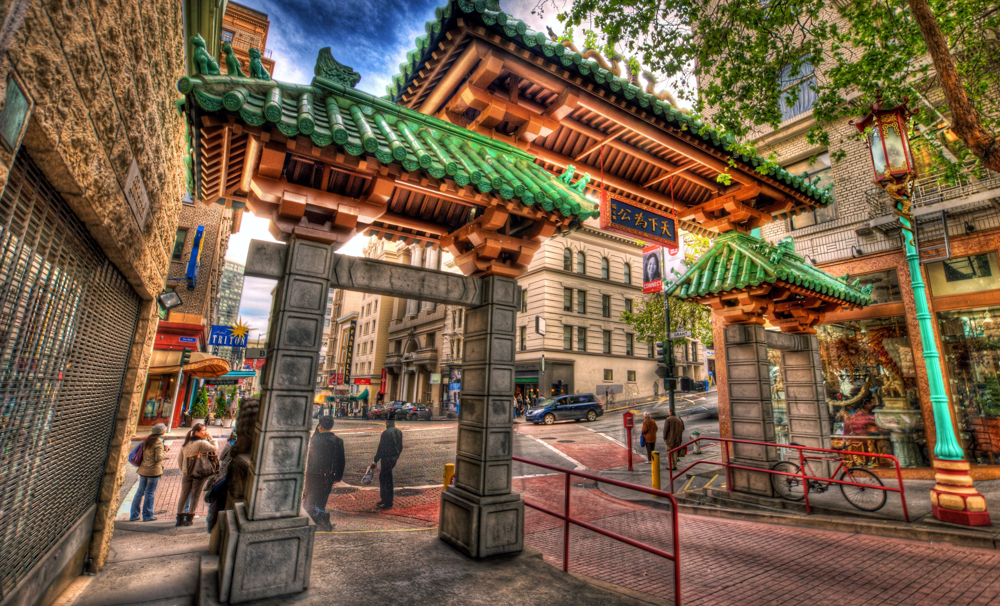

San Francisco Chinatown is the largest Chinatown outside of Asia as well as the oldest Chinatown in North America. It is one of the top tourist attractions in San Francisco. You can use this site to learn more about the attractions, culture, history, and events in Chinatown. Chinatown has the iconic Dragon’s Gate, a bustling maze of streets and alleys brims with dim sum joints and other traditional eateries. Also found are herbalists, bakeries, souvenir shops, and dark cocktail lounges and karaoke bars. There are ornate temples, including the landmark Tien How, as well as the Chinese Historical Society of America Museum.
Dragon's Gate
The Dragon Gate ("Chinatown Gate" on some maps) is a south-facing gate at the intersection of Bush Street and Grant Avenue, marking a southern entrance to San Francisco's Chinatown, in the U.S. state of California. Built in 1969 as a gift from the Republic of China (Taiwan) in the style of a traditional Chinese pailou,[1] it became one of the most photographed locations in Chinatown, along with the older Sing Fat and Sing Chong buildings (at Grant and California).